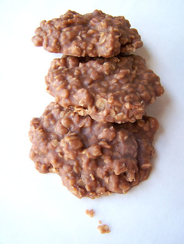

No Bakes

Description
Stove top dessert that you won't be able to wait to cool. Chocolate peanut butter goodness.
Ingredients
- 1/2 cup butter
- 1/2 cup milk
- 2 cups sugar
- 3 cups old fashioned rolled oats (not quick oats)
- 1/2 cup peanut butter
- 2 tablespoons cocoa
- 1 teaspoon vanilla
Steps
- Place 30 inches of waxed paper on counter
- Melt butter in 6 quart saucepan over medium heat
- Add sugar and milk and bring to a boil for 1 minute 20 seconds
- Remove from heat and add remaining ingredients and mix
- Spoon mixture onto waxed paper in approximately 1 tablespoon dollops
- Allow to cool and serve